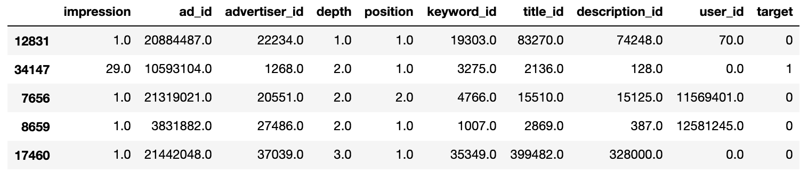
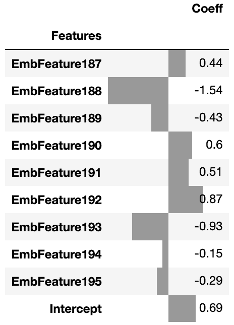
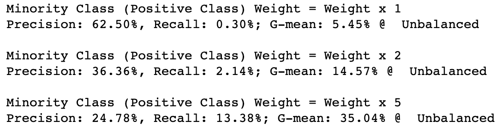
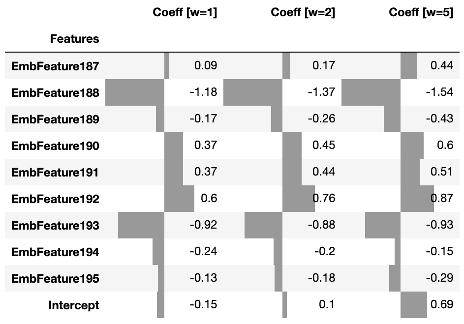
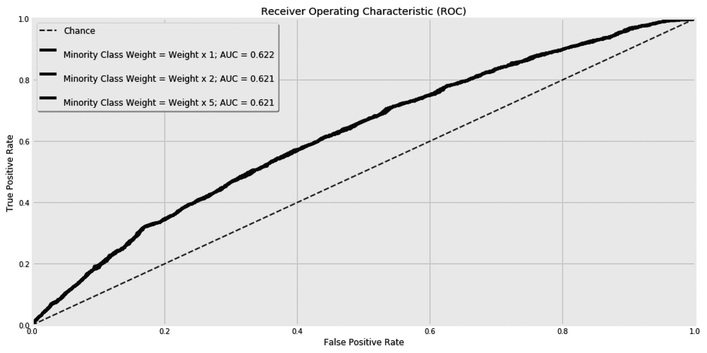
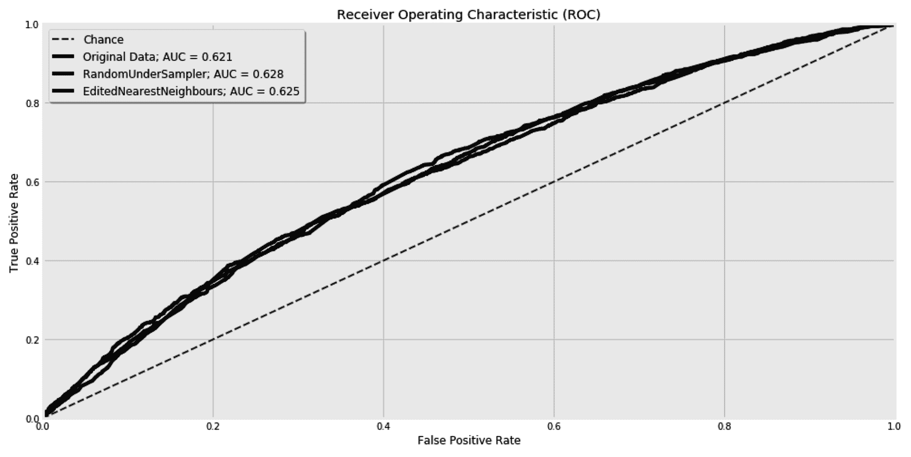
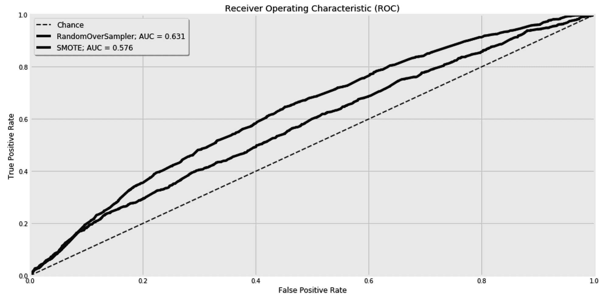
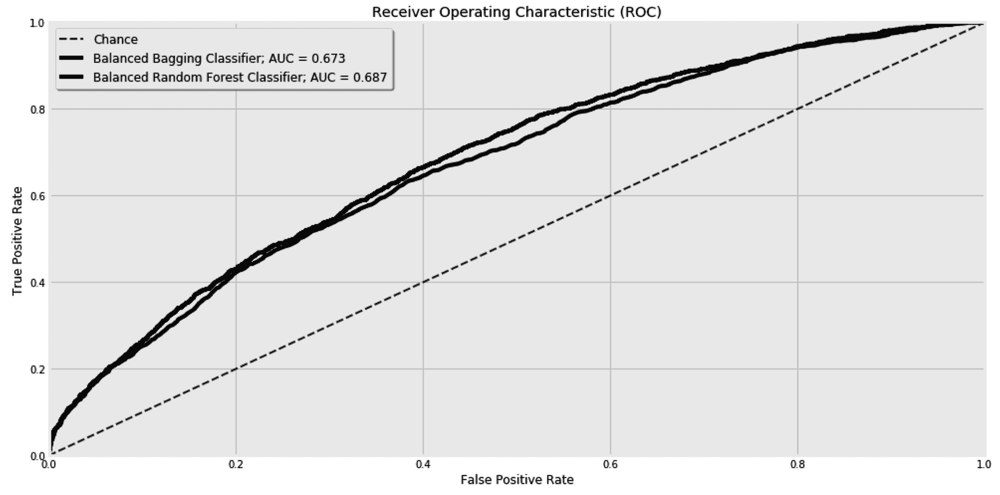
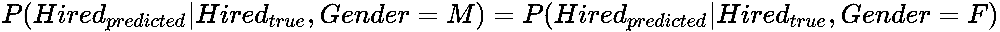
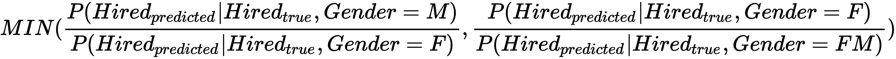

你的类平衡得很好的情况更多的是一个例外而不是规则。在我们会遇到的大多数有趣的问题中，阶层是极度不平衡的。幸运的是，一小部分在线支付是欺诈性的，就像一小部分人患了罕见的疾病一样。相反，很少有参赛者赢得彩票，你的熟人也很少成为你的密友。这就是为什么我们通常对捕捉那些罕见的案例感兴趣。
在这一章中，我们将学习如何处理不平衡的班级。我们将从给我们的训练样本赋予不同的权重开始，以减轻类别不平衡问题。之后，我们将学习其他技术，如欠采样和过采样。我们将在实践中看到这些技术的效果。我们还将学习如何将集成学习和重采样等概念结合起来，并引入新的分数来验证我们的学习者是否满足我们的需求。
本章将涵盖以下主题:
我们开始吧！
通常，一小部分看到广告的人会点击它。换句话说，在这种情况下，正类中样本的百分比可能只有 1%甚至更少。这使得很难预测点击率 ( CTR )，因为训练数据非常不平衡。在本节中，我们将使用来自数据库 ( KDD )杯知识发现的高度不平衡的数据集。
KDD 杯是由 ACM 知识发现和数据挖掘特别兴趣小组组织的年度比赛。2012 年，他们发布了一个广告数据集，显示在搜索引擎的搜索结果旁边。竞争者的目的是预测用户是否会点击每个广告。该数据的修改版本已经发布在 OpenML 平台上(https://www.openml.org/d/1220)。修改后的数据集中的 CTR 为 16.8%。这是我们的正课。我们也可以称之为少数群体，因为大多数情况下不会导致广告被点击。
在这里，我们将下载数据并将其放入数据帧，如下所示:
from sklearn.datasets import fetch_openml
data = fetch_openml(data_id=1220)
df = pd.DataFrame(
data['data'],
columns=data['feature_names']
).astype(float)
df['target'] = pd.Series(data['target']).astype(int)
我们可以使用下面的代码行显示数据集的随机行:
df.sample(n=5, random_state=42)
如果我们都将random_state设置为相同的值，我们可以确保得到相同的随机线。在道格拉斯·亚当斯的《银河系漫游指南》中，42这个数字被认为是生命、宇宙和一切终极问题的答案。因此，在本章中，我们将坚持将random_state设置为42。这是我们的五行样本:

关于这些数据，我们需要记住两件事:
for feature in data['feature_names']:
print(
'Cardinality of {}: {:,}'.format(
feature, df[feature].value_counts().shape[0]
)
)
这将为我们提供以下结果:
Cardinality of impression: 99 Cardinality of ad_id: 19,228 Cardinality of advertiser_id: 6,064 Cardinality of depth: 3 Cardinality of position: 3 Cardinality of keyword_id: 19,803 Cardinality of title_id: 25,321 Cardinality of description_id: 22,381 Cardinality of user_id: 30,114
最后，我们将数据转换成x_train、x_test、y_train和y_test集合，如下所示:
from sklearn.model_selection import train_test_split
x, y = df[data['feature_names']], df['target']
x_train, x_test, y_train, y_test = train_test_split(
x, y, test_size=0.25, random_state=42
)
在本节中，我们下载了必要的数据并将其添加到 DataFrame 中。在下一节中，我们将安装imbalanced-learn库。
由于类别不平衡，我们将需要对训练数据进行重新采样，或者应用不同的技术来获得更好的分类结果。因此，我们将依赖这里的imbalanced-learn库。该项目由费尔南多·诺盖拉于 2014 年启动。它现在提供了多种重采样数据技术，以及用于评估不平衡分类问题的度量。该库的界面与 scikit-learn 兼容。
您可以在终端中运行以下命令，通过pip下载该库:
pip install -U imbalanced-learn
现在，您可以在您的代码中导入和使用它的不同模块，我们将在下面的章节中看到。该库提供的指标之一是gT17】几何平均分数。在第八章 中，系综——当一个模型不够用时，我们学习了真阳性率 ( TPR )、或灵敏度、假阳性率 ( FPR )，并用它们来画曲线下的面积。我们还了解了真阴性率 ( TNR )，或特异性，基本上是 1 减去 FPR。对于二元分类问题，几何平均得分是灵敏度(TPR)和特异性(TNR)乘积的平方根。通过结合这两个指标，我们试图最大化每个类别的准确性，同时考虑到它们的不平衡。geometric_mean_score的界面类似于其他 scikit-learn 指标。它获取真实值和预测值，并返回计算所得的分数，如下所示:
from imblearn.metrics import geometric_mean_score
geometric_mean_score(y_true, y_pred)
在本章中，除了精确度和召回分数之外，我们还将使用这一指标。
在下一节中，我们将改变训练样本的权重，看看这是否有助于我们处理不平衡的类。
我们有自己的数据并安装了imbalanced-learn库。现在，我们准备构建我们的分类器。正如我们前面提到的，我们熟悉的一次性编码技术不能很好地适应我们分类特征的高基数。在第 8 章、集合中——当一个模型不够用的时候，我们简单提到了嵌入的随机树作为一种转换我们特征的技术。它是完全随机的树的集合，其中我们的数据的每个样本将根据它结束的每棵树的叶子来表示。在这里，我们将建立一个管道，其中的数据将被转换成随机树嵌入和缩放。最后，逻辑回归分类器将用于预测点击是否发生:
from sklearn.preprocessing import MaxAbsScaler
from sklearn.linear_model import LogisticRegression
from sklearn.ensemble import RandomTreesEmbedding
from sklearn.pipeline import Pipeline
from sklearn.metrics import precision_score, recall_score
from imblearn.metrics import geometric_mean_score
def predict_and_evalutate(x_train, y_train, x_test, y_test, sample_weight=None, title='Unweighted'):
clf = Pipeline(
[
('Embedder', RandomTreesEmbedding(n_estimators=10, max_leaf_nodes=20, random_state=42)),
('Scaler', MaxAbsScaler()),
('Classifier', LogisticRegression(solver='saga', max_iter=1000, random_state=42))
]
)
clf.fit(x_train, y_train, Classifier__sample_weight=sample_weight)
y_test_pred = clf.predict(x_test)
print(
'Precision: {:.02%}, Recall: {:.02%}; G-mean: {:.02%} @ {}'.format(
precision_score(y_test, y_test_pred),
recall_score(y_test, y_test_pred),
geometric_mean_score(y_test, y_test_pred),
title
)
)
return clf
我们将整个过程包装成一个函数，以便在本章的后面可以重用它。predict_and_evalutate()函数获取 x 和 y 坐标，以及样本重量。我们一会儿就要用到样本重量，但是你现在可以忽略它们。完成预测后，该函数还将打印不同的分数，并返回所用管道的实例。
我们可以使用刚刚创建的函数，如下所示:
clf = predict_and_evalutate(x_train, y_train, x_test, y_test)
默认情况下，计算的精度和召回率是针对正类的。之前的代码给了我们0.3%的召回率、62.5%的精度、5.45%的几何平均分数。召回率小于1%，这意味着分类器将无法捕获绝大多数的阳性/少数类。这是处理不平衡数据时的预期场景。解决这个问题的一种方法是给少数类中的样本更多的权重。这就像要求分类器给予这些样本更多的关注，因为我们关心捕捉它们，尽管它们很稀少。在下一节中，我们将看到样本加权对分类器的影响。
多数班的样本数量大约是少数班的五倍。您可以通过运行以下代码行对此进行双重检查:
(1 - y_train.mean()) / y_train.mean()
因此，给少数类中的样本五倍于其他样本的权重是有意义的。我们可以使用上一节中相同的predict_and_evalutate()函数，并改变样本权重，如下所示:
sample_weight = (1 * (y_train == 0)) + (5 * (y_train == 1))
clf = predict_and_evalutate(
x_train, y_train, x_test, y_test,
sample_weight=sample_weight
)
现在，召回跳到了13.4%，而精度下降到了24.8%。由于新的权重，几何平均分数从5.5%下降到34%。
predict_and_evalutate()函数返回所使用的管道的实例。我们可以通过clf[-1]获得管道的最后一个组件，逻辑回归分类器。然后，我们可以在截取时访问分配给每个特征的分类器的系数。由于嵌入步骤，我们可能最终得到多达 200 个特征；10 个估计器 x 多达 20 个叶节点。以下函数打印最后九个要素、截距及其系数:
def calculate_feature_coeff(clf):
return pd.DataFrame(
{
'Features': [
f'EmbFeature{e}'
for e in range(len(clf[-1].coef_[0]))
] + ['Intercept'],
'Coeff': list(
clf[-1].coef_[0]
) + [clf[-1].intercept_[0]]
}
).set_index('Features').tail(10)
calculate_feature_coeff(clf).round(2)的输出也可以四舍五入到小数点后两位，如下所示:

现在，让我们并排比较三种加权策略。权重为 1 时，少数类和多数类的权重相同。然后，我们给少数类两倍于多数类的权重，以及五倍于多数类的权重，如下所示:
df_coef_list = []
weight_options = [1, 2, 5]
for w in weight_options:
print(f'\nMinority Class (Positive Class) Weight = Weight x {w}')
sample_weight = (1 * (y_train == 0)) + (w * (y_train == 1))
clf = predict_and_evalutate(
x_train, y_train, x_test, y_test,
sample_weight=sample_weight
)
df_coef = calculate_feature_coeff(clf)
df_coef = df_coef.rename(columns={'Coeff': f'Coeff [w={w}]'})
df_coef_list.append(df_coef)
这给了我们以下结果:

很容易看出加权是如何影响精确度和召回率的。好像他们中的一个总是以牺牲另一个为代价来提高自己。这种行为是移动分类器边界的结果。如我们所知，类别边界由不同特征的系数以及截距来定义。我敢打赌，你一定很想并排看看前面三个模型的系数。幸运的是，我们已经将系数保存在df_coef_list中，这样我们就可以使用下面的代码片段来显示它们:
pd.concat(df_coef_list, axis=1).round(2).style.bar(
subset=[f'Coeff [w={w}]' for w in weight_options],
color='#999',
align='zero'
)
这为我们提供了三个分类器之间的以下视觉比较:

特征的系数确实略有变化，但截距的变化更明显。总之，权重对截距的影响最大，因此会移动类边界。
如果预测的概率高于50%，则样本被分类为阳性类别的成员。在其他系数没有任何变化的情况下，截距的移动相当于改变概率阈值，使其高于或低于那个50%。如果权重只影响截距，我们可能会建议我们应该尝试不同的概率阈值，直到我们得到期望的精度-召回折衷。为了检查加权是否在改变截距之外提供了任何额外的好处，我们必须检查接收器工作特性 ( ROC )曲线下的面积。
加权是否改善了 ROC 曲线下的面积？要回答这个问题，让我们首先创建一个函数，该函数将显示 ROC 曲线并打印曲线 ( AUC )下的区域:
from sklearn.metrics import roc_curve, auc
def plot_roc_curve(y, y_proba, ax, label):
fpr, tpr, thr = roc_curve(y, y_proba)
auc_value = auc(fpr, tpr)
pd.DataFrame(
{
'FPR': fpr,
'TPR': tpr
}
).set_index('FPR')['TPR'].plot(
label=label + f'; AUC = {auc_value:.3f}',
kind='line',
xlim=(0,1),
ylim=(0,1),
color='k',
ax=ax
)
return (fpr, tpr, auc_value)
现在，我们可以循环三个权重选项，并渲染它们对应的曲线，如下所示:
from sklearn.metrics import roc_curve, auc
fig, ax = plt.subplots(1, 1, figsize=(15, 8), sharey=False)
ax.plot(
[0, 1], [0, 1],
linestyle='--',
lw=2, color='k',
label='Chance', alpha=.8
)
for w in weight_options:
sample_weight = (1 * (y_train == 0)) + (w * (y_train == 1))
clf = Pipeline(
[
('Embedder', RandomTreesEmbedding(n_estimators=20, max_leaf_nodes=20, random_state=42)),
('Scaler', MaxAbsScaler()),
('Classifier', LogisticRegression(solver='lbfgs', max_iter=2000, random_state=42))
]
)
clf.fit(x_train, y_train, Classifier__sample_weight=sample_weight)
y_test_pred_proba = clf.predict_proba(x_test)[:,1]
plot_roc_curve(
y_test, y_test_pred_proba,
label=f'\nMinority Class Weight = Weight x {w}',
ax=ax
)
ax.set_title('Receiver Operating Characteristic (ROC)')
ax.set_xlabel('False Positive Rate')
ax.set_ylabel('True Positive Rate')
ax.legend(ncol=1, fontsize='large', shadow=True)
fig.show()
这三条曲线显示在这里:

ROC 曲线旨在显示不同概率阈值的 TPR 和 FPR 之间的权衡。如果 ROC 曲线下的面积大于或小于三种加权策略的相同值，则加权除了改变分类器的截距之外没有提供太多价值。因此，如果我们想以牺牲精确度为代价来提高召回率，或者重新加权我们的训练样本，或者为我们的分类决策尝试不同的概率阈值，这取决于我们。
除了样本加权之外，我们还可以对训练数据进行重新采样，以便在更平衡的集合上进行训练。在下一节中，我们将看到由imbalanced-learn库提供的不同的采样技术。
“这不是否认。我只是对我接受的现实有选择性。”
比尔·沃特森
如果机器学习模型是人类，他们会相信目的证明手段是正确的。当他们 99%的训练数据属于一个类，并且他们的目标是优化他们的目标函数时，如果他们专注于获得正确的单个类，我们不能责怪他们，因为这有助于 99%的解决方案。在上一节中，我们试图通过给少数类更多的权重来改变这种行为。另一种策略可能需要从多数类中移除一些样本，或者向少数类添加新的样本，直到两个类达到平衡。
真理就像金子一样，不是靠它的生长而获得的，而是靠把所有不是金子的东西洗掉而获得的。
-列夫·托尔斯泰
我们可以从多数类中随机取出样本，直到它变得与少数类一样大。当处理非二进制分类任务时，我们可以从所有类中移除样本，直到它们都变成与少数类相同的大小。这种技术被称为随机欠采样。以下代码显示了如何使用RandomUnderSampler()对多数类进行下采样:
from imblearn.under_sampling import RandomUnderSampler
rus = RandomUnderSampler()
x_train_resampled, y_train_resampled = rus.fit_resample(x_train, y_train)
您可以通过设置sampling_strategy超参数来减少它们的不平衡，而不是保持类的平衡。它的值决定了少数阶级对多数阶级的最终比率。在下面的例子中，我们保持了多数类的最终大小，因此它是少数类的两倍:
from imblearn.under_sampling import RandomUnderSampler
rus = RandomUnderSampler(sampling_strategy=0.5)
x_train_resampled, y_train_resampled = rus.fit_resample(x_train, y_train)
下采样过程不必是随机的。例如，我们可以使用最近邻算法来移除与其邻居不一致的样本。EditedNearestNeighbours模块允许您通过其n_neighbors超参数设置要检查的邻居数量，如下所示:
from imblearn.under_sampling import EditedNearestNeighbours
enn = EditedNearestNeighbours(n_neighbors=5)
x_train_resampled, y_train_resampled = enn.fit_resample(x_train, y_train)
先前的技术属于所谓的原型选择。在这种情况下，我们从已经存在的样本中选择样本。与原型选择相反，原型生成方法生成新样本来总结现有样本。 ClusterCentroids 算法将多数类样本放入聚类中，并使用聚类质心代替原始样本。关于聚类和聚类质心的更多信息将在第 11 章 “聚类-理解未标记数据”中提供。
为了比较上述算法，让我们创建一个函数，除了 sampler 实例之外，还获取 x 和 y，然后训练它们并返回测试集的预测值:
from sklearn.preprocessing import MaxAbsScaler
from sklearn.linear_model import LogisticRegression
from sklearn.ensemble import RandomTreesEmbedding
from sklearn.pipeline import Pipeline
def sample_and_predict(x_train, y_train, x_test, y_test, sampler=None):
if sampler:
x_train, y_train = sampler.fit_resample(x_train, y_train)
clf = Pipeline(
[
('Embedder', RandomTreesEmbedding(n_estimators=10, max_leaf_nodes=20, random_state=42)),
('Scaler', MaxAbsScaler()),
('Classifier', LogisticRegression(solver='saga', max_iter=1000, random_state=42))
]
)
clf.fit(x_train, y_train)
y_test_pred_proba = clf.predict_proba(x_test)[:,1]
return y_test, y_test_pred_proba
现在，我们可以使用刚刚创建的sample_and_predict()函数，为以下两种采样技术绘制 ROC 曲线:
from sklearn.metrics import roc_curve, auc
from imblearn.under_sampling import RandomUnderSampler
from imblearn.under_sampling import EditedNearestNeighbours
fig, ax = plt.subplots(1, 1, figsize=(15, 8), sharey=False)
# Original Data
y_test, y_test_pred_proba = sample_and_predict(x_train, y_train, x_test, y_test, sampler=None)
plot_roc_curve(
y_test, y_test_pred_proba,
label='Original Data',
ax=ax
)
# RandomUnderSampler
rus = RandomUnderSampler(random_state=42)
y_test, y_test_pred_proba = sample_and_predict(x_train, y_train, x_test, y_test, sampler=rus)
plot_roc_curve(
y_test, y_test_pred_proba,
label='RandomUnderSampler',
ax=ax
)
# EditedNearestNeighbours
nc = EditedNearestNeighbours(n_neighbors=5)
y_test, y_test_pred_proba = sample_and_predict(x_train, y_train, x_test, y_test, sampler=nc)
plot_roc_curve(
y_test, y_test_pred_proba,
label='EditedNearestNeighbours',
ax=ax
)
ax.legend(ncol=1, fontsize='large', shadow=True)
fig.show()
得到的 ROC 曲线将如下所示:

在这里，我们可以看到采样技术在 ROC 曲线下的结果区域上的价值，与在原始未采样集合上的训练相比较。这三个图表可能太接近，我们无法区分它们，就像这里的情况一样，所以检查得到的 AUC 数是有意义的。
除了欠采样，我们还可以增加少数类的数据点。RandomOverSampler天真地克隆少数类的随机样本，直到它变得和多数类一样大。另一方面，SMOTE和ADASYN通过插值生成新的合成样本。
这里，我们将RandomOverSampler与SMOTE过采样算法进行比较:
from sklearn.metrics import roc_curve, auc
from imblearn.over_sampling import RandomOverSampler
from imblearn.over_sampling import SMOTE
fig, ax = plt.subplots(1, 1, figsize=(15, 8), sharey=False)
# RandomOverSampler
ros = RandomOverSampler(random_state=42)
y_test, y_test_pred_proba = sample_and_predict(x_train, y_train, x_test, y_test, sampler=ros)
plot_roc_curve(
y_test, y_test_pred_proba,
label='RandomOverSampler',
ax=ax
)
# SMOTE
smote = SMOTE(random_state=42)
y_test, y_test_pred_proba = sample_and_predict(x_train, y_train, x_test, y_test, sampler=smote)
plot_roc_curve(
y_test, y_test_pred_proba,
label='SMOTE',
ax=ax
)
ax.legend(ncol=1, fontsize='large', shadow=True)
fig.show()
得到的 ROC 曲线有助于我们比较手头数据集上使用的两种技术的性能:

正如我们所见，SMOTE算法没有在我们当前的数据集上执行，而RandomOverSampler将曲线向上推。到目前为止，我们使用的分类器对我们应用的采样技术是不可知的。我们可以简单地删除逻辑回归分类器，并在这里插入任何其他分类器，而无需更改数据采样代码。与我们使用的算法相比，数据采样过程是一些集成算法的组成部分。在下一节中，我们将学习如何利用这一事实来两全其美。
在第 8 章、系综——当一个模型不够时，我们学习了打包算法。它们基本上允许多个估计器从数据集的不同子集学习，希望这些不同的训练子集将允许不同的估计器在组合时做出更好的决策。既然我们已经对多数类进行了欠采样，以保持我们的训练数据平衡，那么我们很自然地将这两种想法结合在一起；即装袋和欠采样技术。
BalancedBaggingClassifier在不同的随机选择的数据子集上建立几个估计器，其中类在采样过程中是平衡的。类似地，BalancedRandomForestClassifier在平衡的样本上构建它的树。在下面的代码中，我们绘制了两个系综的 ROC 曲线:
from imblearn.ensemble import BalancedRandomForestClassifier
from imblearn.ensemble import BalancedBaggingClassifier
fig, ax = plt.subplots(1, 1, figsize=(15, 8), sharey=False)
# BalancedBaggingClassifier
clf = BalancedBaggingClassifier(n_estimators=500, n_jobs=-1, random_state=42)
clf.fit(x_train, y_train)
y_test_pred_proba = clf.predict_proba(x_test)[:,1]
plot_roc_curve(
y_test, y_test_pred_proba,
label='Balanced Bagging Classifier',
ax=ax
)
# BalancedRandomForestClassifier
clf = BalancedRandomForestClassifier(n_estimators=500, n_jobs=-1, random_state=42)
clf.fit(x_train, y_train)
y_test_pred_proba = clf.predict_proba(x_test)[:,1]
plot_roc_curve(
y_test, y_test_pred_proba,
label='Balanced Random Forest Classifier',
ax=ax
)
fig.show()
为了简洁起见，省略了一些格式行。运行前面的代码会得到下面的图形:

从这一点来看，很明显，欠采样和集成的结合比我们早期的模型取得了更好的结果。
除了 bagging 算法，RUSBoostClassifier还结合了随机欠采样技术和adaBoost分类器。
到目前为止，我们只关注了类别标签的不平衡。在某些情况下，特定特征的不平衡也可能是有问题的。从历史上看，贵公司的绝大多数工程师都是男性。现在，如果你建立一个算法，根据你现有的数据过滤新的申请人，会不会歧视女性候选人？
机会均等评分试图评估一个模特对某个特征的依赖程度。简而言之，如果模型的预测和实际目标之间的关系是相同的，则认为模型为某个特性的不同值提供了平等的机会，而不管该特性的值如何。从形式上来说，这意味着预测目标的条件概率，这是以实际目标为条件的，申请人的性别应该是相同的，与性别无关。这些条件概率如下式所示:

前面的等式只给出了二元结果。因此，我们可以把它变成一个比值，取值在 0 和 1 之间。由于我们不知道哪种性别获得更好的机会，我们使用下面的等式取两个可能分数的最小值:

为了展示这一指标，让我们假设我们有一个根据申请人的IQ和Gender训练的模型。下面的代码显示了它在测试集上的预测，其中真实标签和预测并列列出:
df_engineers = pd.DataFrame(
{
'IQ': [110, 120, 124, 123, 112, 114],
'Gender': ['M', 'F', 'M', 'F', 'M', 'F'],
'Is Hired? (True Label)': [0, 1, 1, 1, 1, 0],
'Is Hired? (Predicted Label)': [1, 0, 1, 1, 1, 0],
}
)
现在，我们可以创建一个函数来计算我们的机会均等分数，如下所示:
def equal_opportunity_score(df, true_label, predicted_label, feature_name, feature_value):
opportunity_to_value = df[
(df[true_label] == 1) & (df[feature_name] == feature_value)
][predicted_label].mean() / df[
(df[true_label] == 1) & (df[feature_name] != feature_value)
][predicted_label].mean()
opportunity_to_other_values = 1 / opportunity_to_value
better_opportunity_to_value = opportunity_to_value > opportunity_to_other_values
return {
'Score': min(opportunity_to_value, opportunity_to_other_values),
f'Better Opportunity to {feature_value}': better_opportunity_to_value
}
当用我们的df_engineers数据帧调用时，它会给我们0.5。小于 1 的值告诉我们，女性申请人被我们的模型雇用的机会较少:
equal_opportunity_score(
df=df_engineers,
true_label='Is Hired? (True Label)',
predicted_label='Is Hired? (Predicted Label)',
feature_name='Gender',
feature_value='F'
)
显然，我们可以从这个模型中完全排除性别特征，但是如果有任何剩余特征依赖于申请人的性别，这个分数仍然是有用的。此外，当处理非二元分类器和/或非二元特征时，我们需要改变这个分数。你可以在 Moritz Hardt 等人的原始论文中读到关于这个分数的更多细节。
在这一章中，我们学习了如何处理阶级不平衡。这是机器学习中经常出现的问题，其中大部分价值都在少数类中。这种现象非常普遍，以至于人们创造了黑天鹅这个比喻来解释它。当机器学习算法试图盲目优化其开箱即用的目标函数时，它们通常会错过那些黑天鹅。因此，我们必须使用诸如样本加权、样本移除和样本生成等技术来迫使算法满足我们自己的目标。
这是本书关于监督学习算法的最后一章。粗略估计，商业机构和学术界 80%的机器学习问题是监督学习问题，这就是为什么本书约 80%的内容集中在这一范式上。从下一章开始，我们将开始涵盖其他机器学习范例，这是大约 20%的现实生活价值所在。我们将从查看聚类算法开始，然后继续查看数据也未标记的其他问题。